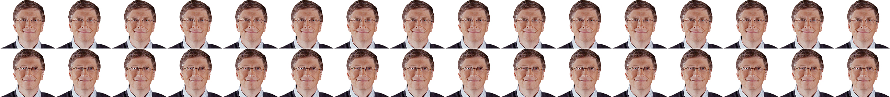

The rumors of cash's demise have been greatly exaggerated. It's not dying. It's not on life support. Uncle Sam isn't standing over a big pile of twenties with a pair of defibrillator paddles trying to bring it back to life. Cash is not only still very much alive, but it's surprisingly popular with a broad spectrum of Americans. If you ask Americans if they have a dollar, most are able to say yes. That's why it's so surprising to see so many act as if physical currency is about to give up the ghost for good.
Contrary to soothsaying in the tech media, a fully cashless society isn't as close to fruition as, say, a self-driving car. Unless you're an American making more thn $200,000 per year (and you're probably not), then cash is your No. 1, go-to payment choice.
Cash owes its reign to base-level accessibility, being available to nearly every American who wants it.
Credit and debit cards remain widely used payment options, and, yes, there's an increasing trend toward mobile payment platforms such as Venmo and Apple Pay, but each of these requires additional steps: bank accounts, FICO scores and/or access to technology.
Ultimately physical cash, comprising trillions in bills and coins, is viewed by most Americans as accessible, safe and a smart payment choice when economic headwinds increase and cash becomes a crutch to maintain our financial footing.
What we use to pay for things says a lot about us -- it speaks to our education level, our income level and our generationality -- and those are the drivers keeping the Washingtons, Lincolns, Benjamins, and in a few years the Tubmans, in our pockets for the foreseeable future.
Rich or poor, everyone uses cash. But your personal finances often dictate which payment method you rely on the most.
Cash is still king for most American families, and its prevalence as a payment method is closely tied to one's rung on the economic ladder. The less money you make, the more likely you are to use cash as your primary payment method, according to a survey from the Federal Reserve System.
But it doesn't feel that way for many Americans. They may use cash to purchase gas, groceries and even pay their cellphone bill, but research has shown that middle- and low-income families actually wish they could pay with something else.
In households that made more than $25,000 per year, cash was used for 57 percent of all transactions, but 45 percent of those households preferred to use another payment method, according to the Federal Reserve System study. This phenomenon is just as prevalent at other income levels. Whether you make 25,000 per year or more than $200,000, cash was used in at least one-third of all household monthly transactions.
Cash is still king for most American families, and its prevalence as a payment method is closely tied to one's rung on the economic ladder. The less money you make, the more likely you are to use cash as your primary payment method, according to a survey from the Federal Reserve System.
In households that made more than $25,000 per year, fewer customers preferred cash over other payment methods, but cash was used for 57 percent of all transactions. And it's just as prevalant at other income levels. Cash was used in more than one-third of the household monthly transactions made at all income levels.
Unless you came from a household with more than $200,000 in annual income, you would have paid the majority of the monthly transactions with credit cards, 41 percent, compared to 33 percent of transactions in cash.
Source: 2012 Cash Usage and Preference by Household Income
Although cash maintains a baseline usage at most income levels, non-cash payments begin to gather steam the more money one makes. For household incomes above $25,000 per year, non-cash payment methods are utilized approximately 60 percent of the time, and that percentage rises alongside income.
And those Americans who rely mostly on cash are not a small group. In 2013, 7.7 percent of U.S. households, or more than 20 million people were unbanked, which means they are not associated with a financial institution, and approximately 20 percent of households were underbanked, according to the Federal Deposit Insurance Corporation.
"That's a lot of people, and that's a lot of people that need access to cash for them to pay bills and for them to make purchases," said Shaun O'Brien, senior analyst of the Cash Product Office in Federal Reserve System. "So if we've decided that we are going to make large steps or important policy decisions to remove cash, it is really negatively impacting an enormous amount of people."
The move toward a cash-less society faces fewer obstacles in some European countries than it would in the United States. Take Sweden, for example. The Scandinavian country has been one of the most willing to trend toward a cashless society.
About 900 out of 1,600 Swedish commercial bank branches have stopped offering cash-handling services to customers, according to the Swedish Bankers' Association. What's happening overseas, and in a country with a total population of approximately 9.5 million people, cannot be so readily applied to the United States and its more than 318 million inhabitants.
Paper-purging the economy requires the combined interests of banks, consumers, merchants, unions, entrepreneurs, to name just a few million constituencies. People who would be hurt from cash's demise—immigrants, the elderly, those living in rural areas, etc.—are a small group in Sweden, but it's a different story in the States, according to Niklas Arvidsson, associate professor at the Royal Institute of Technology in Sweden.
"The U.S. is such a large and divided country to make this transition," Arvidsson said. "The U.S. dollar is such a large currency and the use of cash is a much greater and more complicated issue than with the Swedish Crown."
People in the U.S. are not yet ready to move on from cash. Businesses, merchants, and government departments understand the consequence of going cashless, and have built a sizable infrastructure banking on the continued use of cash. In fact, the ways to get your hands on cash are expanding in most cases, not contracting.
The U.S. ATM withdrawal value increased from $108 to $118 in 2012, according to the Federal Reserve System, and U.K. research and consulting firm Retail Banking Research predicts that 438,000 ATMs will be installed in the U.S. by 2019. In late 2015, Detroit-based energy company DTE Energy Co. put 30 kiosks in its payment centers for those who wish to pay bills in cash. In April of this year, the Internal Revenue Service announced that individual taxpayers without a bank account or credit card could pay taxes with cash at more than 7,000 7-Eleven stores nationwide.
"If those industries didn't think that cash was going to be around for a very long time, we don't think they will be making those investments," O'Brien said of cash-handling technologies. "Their consumers are still using cash, and it looks like their consumers are going to use cash for a fair amount of time, so it's worthwhile to make those investments."
No matter what your income or banking status, cash is simple, easy to obtain and works almost everywhere. So why are we pretending its days are numbered?
You can ApplePay at a vending machine, swipe a debit card at a food truck, and if you want to buy a drink on an airplane, don't you dare think of using cash because they only accept plastic.
It seems like everywhere you look people are eschewing cash for plastic and digital ones and zeros beamed from phones to point of sale systems. But looks can be deceiving. No matter if you're rich, poor, young or old, cash captures one-third.
"People use cash because they find it easy, convenient and fast, even if they have higher incomes and more options," said Joanna Stavins, a senior economist and policy advisor at the Federal Reserve Bank of Boston.
Cash remains a relevant form of payment for several key reasons. Besides the fact that everyone is using it, you also don't need a credit score, a checking account or a cellphone to pay with cash. In fact, the barriers to get cash in your hand are minimal when compared to other popular forms of payment. And when you're out to eat at a restaurant that doesn't accept cards, the reliability of old-fashioned cash proves it deserves that place in your wallet next to all your cards. Just think: There are $1.45 trillion in circulation on any given day—that's a lot of opportunity to get your hands on some cash.
All of this sounds great for cash, right? That is until you talk to a few friends who quickly dismiss this notion. Nobody uses cash anymore, they argue.
Hardly.
Believe it or not, everyone still makes about 22 transactions a month using cash, spending approximately $21 per cash transaction.
We use cash far more than we think.
Source: Consumer Preferences and the Use of Cash: Evidence from the Diary of Consumer Payments Choice Working Paper by Shaun O'Brien, June 2014
Whether a person makes $5,000 a year or $500,000 a year, they always say they prefer some method other than cash.
Their bill statements just don't reflect it.
And while not everyone prefers cash as their primary payment method, research indicates that most of those consumers would declare it their preferred backup method.
Think about it this way: Picking payment types is actually a lot like voting for the 2008 Heisman Trophy.
No, really. It is.
The Heisman is awarded to the nation's top college football player every season. In 2008, it was a three-horse race between Oklahoma quarterback Sam Bradford, Texas quarterback Colt McCoy and Florida quarterback Tim Tebow (maybe you've heard of him).
Tebow earned more first-place votes (309) than any other candidate, but also had the least second and third-place votes (441) of the three.
Bradford, on the other hand, had nine fewer first-place votes than Tebow, but came in second 108 times more than Tebow. A majority of voters thought Tebow should finish first, but enough people picked Bradford to finish second and third that it didn't matter.
Tebow finished third. Bradford has the Heisman.
Bradford is cash. Tebow is every payment option that isn't cash.
Cash may not be getting the most first-place votes anymore, but it's still heavily leading in second and third-place votes, and because of that, it's always a serious contender in how you choose to pay.
Cash is available to anyone, regardless of your financial standing or ability to open a bank account. The cash you have in your wallet now at one point went through a bank, whether you received your cash directly from that institution or from somewhere else, and it says a lot about the level of access you have to a financial institution. There are three types of relationships a person can have with a bank that ultimately affects the way they get their hands on cash.
"There's still room for cash for sure."
This is important because approximately one-fifth of Americans are underbanked, by definition of the FDIC, which means they have a bank account but are not fully committed to using it. Digging deeper, about 8 percent of Americans do not have any connection with an insured institution.
The weaker a person's relationship is with their bank, the more likely they are to use cash. The majority of Americans, or 67 percent of us, have a solid relationship with our bank. Those in this group have a bank account and can get access to their money by simply depositing or withdrawing it from a teller or ATM.
According to "How Consumers Pay: Adoption and Use of Payments" by Scott Shudah and Joanna Stavins, unbanked customers rely on cash more thank bank account holders do. About three-quarters of their transactions were conducted in cash compared to just one-quarter for consumers with a bank account.
"Unbanked customers have a very limited set of options," Stavins said.
While Stavins said cash usage is heavier among those in lower income brackets, those with more money don't fully abandon cash. You can fill up all the card slots in your wallet and still use cash for some transactions.
"There's still room for cash for sure," Stavins said.
Cash mostly comes into play when we have smaller transactions to be made. A 2014 study by the Federal Reserve shows the average value of a cash transaction is just $21. For non-cash payments, the study states the average value for debit cards was $44 and $168 for checks.
It makes sense. Think about your spending habits on an average day—you buy your morning coffee, then maybe you stop off for a bagel, pay for parking at your destination, not to mention lunch and your mid-afternoon caffeine. Those transactions haven't even carried us to the end of our day, yet we've already made several small purchases ripe for cash usage.
A study authored by Shaun O'Brien of the Cash Product Office cites evidence from the "Diary of Consumer Payment Choice" that reinforces this point. Of the 50.5 non-bill payments consumers averaged during the month, more than half of them were under $25. The larger the purchase, the less likely it is that people will use cash.
Source: Source: Consumer Preferences and the Use of Cash: Evidence from the Diary of Consumer Payments Choice Working Paper by Shaun O'Brien, June 2014
The champ doesn't need to be invincible so long as it has a leg up on the competition—and for cash's universal acceptance is its edge.
When we think about the near future, we picture a consumer market in which all transactions can be made by a tap of our smartphone. The forecast may look promising for this type of payment, but its current state of availability makes it a weak contender when pitted up against cash. As of January, just 17 percent of all point of sale terminals accepted EMV-NFC (chip and wireless) payments, while an additional 26 percent accepted EMV-only (chip) payments. Together that totals less than half of all point of sale terminals in the United States, according to data from Let's Talk Payments.
Even if the people are ready to launch into the future of mobile wallets, the infrastructure isn't quite there yet. Adam Smitherman of Total System Services Inc. said that the RFID systems, the larger umbrella under which NFC resides, were not widely available when mobile wallet payment options made their debut.
"We didn't exactly have a great infrastructure in place, it wasn't widespread," said Smitherman. "I think that updates to infrastructure and that being pushed by a large brand such as Apple will have us get there."
What does this mean for consumers today? More often than not, you'll be safest leaving the house with a little bit of cash on hand.
In times of economic uncertainty and lagging faith in institutions, people increasingly trust only what they can hold.
Your grandmother may have had stacks of twenties stuffed under her bed, but Nana did it for a good reason.
Keeping cash in the home is one of the greatest lessons learned from the Great Depression. As banks failed, the people who trusted them to hold their money lost out, with many losing everything they had.
"When you think about it, to have money, you need a tremendous amount of trust."
The alternative was to keep cash on hand. Pulling money out of bank vaults and stuffing it into thick mattresses and shoeboxes stacked high in closets turned into everyday acts. Benjamin Roth, a lawyer who documented the economic downturn in a diary, wrote in 1936: "This depression has indelibly impressed on my mind one thing, and that is the value of having on hand sufficient capital to cover emergencies."
The lessons from the Great Depression loom large over today's spending and saving habits. Even in an era of depositing checks from your phone and swiping a card to spend money you've never seen, cash—the physical currency that you can touch and count—has remained a sturdy and dependable form of personal capital. Seeing is believing, and when people don't trust the economy, they hold onto their bills just like grandma did.
"When you think about it, to have money, you need a tremendous amount of trust," said Dan Ariely, author and professor of psychology and behavioral economics at Duke University. "It's an agreement between everybody about what it is and what it's worth, and when you don't trust the economy, people are less likely to be willing to have more abstract representations of money rather than the concrete [cash]."
If the Great Depression was the lesson, then the Great Recession, which broadsided the economy in 2008, was the midterm exam this country never wanted to take. With the economy teetering on the brink of collapse and the financial footing of many Americans becoming increasingly shaky, many people took the cash-only mantras of famous advisors like Suze Orman and Dave Ramsey to heart, spending only what they had compared to what they didn't have yet.
The effect was measurable. By the close of the Great Recession in 2009, cash outpaced every other payment form and, perhaps most consequential, accompanied a precipitous drop in credit card usage over the same time period, according to a study by the Federal Reserve Bank of Boston. This dip in credit card usage and immediate surge in cash payments was more than a bellwether of the American economy—it represented a vote of no confidence in the financial security of its citizenry and its willingness to take steps to mitigate the fallout.
Source: 2013 Survey of Consumer Payment Choice
"We want to manage our finances in a better way and constraining ourselves really helps," Ariely said. "If we don't think about how much money we have and spend using credit cards, we might not constrain our spending. But if we have cash, we're more connected to it, and we understand better what we have. We might spend less."
Consumer sentiment levels during other recessions show similar evidence of this mistrust. The University of Michigan Surveys of Consumers asks Americans their feelings about financial security: their personal finances, business conditions and future purchase plans. The survey's historical data show huge dips in confidence happen during these times of economic distress. This loss in confidence affects our spending habits, and it certainly affects how we pay for things.
"Cash is the form of payment that is most 'psychologically real' to people."
During economic hard times, consumer lose confidence in the economy. Here's what we've seen:
Recession dates from the National Bureau of Economic Research and the lengths are listed peak to trough: when the recession began to the point when the economy started to grow
There's a psychological reason for our attachment to cash. The connection is based on a sense of "psychological ownership" because we can feel it, according to a Journal of Consumer Research study titled "Paper or Plastic?: How We Pay Influences Post-Transaction Connection."
"Cash is the form of payment that is most 'psychologically real' to people," said Jim Bettman, professor of business administration at Duke University and one of the study's authors. "What we mean by that is that people learn about money by having actual cash physically in their hands, and they have to give it up to get something. As a kid, giving up your cash from an allowance is pretty painful, for example. Psychological ownership means that a person feels attached to something, that it is theirs and feels like part of them."
Today, as the economy claws its way back, physical currency is no longer at its 2009 peak. The share of cash transactions has fallen over the past seven years, and by 2013, both cash and credit card payment methods returned to normal, with credit card usage rising just above its pre-2008 level.
But what does this all mean for the future of cash payments? Will another recession or depression for paper to topple plastic in favor of paper once more? Past events make that a distinct possibility. But one thing is for certain: Getting Americans to wholly trust financial institutions and other outsiders to hold on to the bulk of their fortunes will likely be a long process. In fact, a February 2016 study by the Surveys of Consumers found consumers had less trust in commercial banks today than they did after the stock market crash of 1987.
"It is well-known that while confidence can be lost in an instant, regaining confidence entails a long and slow process," Surveys of Consumers director Richard Curtin said in the report.
Any attempt to completely phase out cash could prove to be just as glacial, with the mattress—or its 21st-century equivalent—remaining a viable and more trustworthy alternative than banks for many struggling Americans.
Technological advances and new payment methods are primed to deteriorate cash as a fixture in American life. But "How long will it take?" is the trillion-dollar question everyone wants answered.
Cash is ubiquitous, for sure, but its market share is being slowly diluted by old standbys such as debit and credit as well as up-and-comers such as NFC payments and in-app purchases.
According to the 2013 Survey of Consumer Payment Choice, the amount of transaction shares for payment cards has increased while cash transactions have slowly declined.
Chad Harper, vice president and senior payments advisor of the Federal Reserve Bank of Richmond, said recent research points toward the continued downward spiral of cash. He predicts debit card popularity will continue its upward climb in the next five to 10 years and cash usage to possibly decrease.
"More recently you can really see it [debit cards] taking off," Harper said.
Source: 2013 Survey of Consumer Payment Choice
Joanna Stavins, a senior economist and policy advisor at the Federal Reserve Bank of Boston, believes cash is here to stay even with small dips in market share.
"There are more and more payment instruments available to consumers as technology improves and the cost of technology has gone down, but nothing is disappearing," Stavins said.
Americans started with four payment instruments in 1939: cash, credit, money order and traveler's checks. The market has fragmented to hold six additional dominate payment types: debit cards, credit cards, prepaid cards, online banking bill payments (OBBP), bank account number payments (BANP), and online peer-to-peer and mobile account payments.
Some of these payment options have sprung up as an answer to Americans increasingly abandoning brick-and-mortar stores in favor of online shopping.
Well, as you might've guessed, online shopping already makes up a huge portion of people's purchases, and that's only expected to grow.
In 2015, 1.46 billion people bought something online, according to Statista, an online statistics portal. By 2019, that number is estimated to jump to a whopping 2.07 billion, with 58 percent of global Internet users having purchased something online.
Perhaps the strongest indicator of a cultural shift in how people make their purchases is found on Black Friday and the busy shopping weekend following Thanksgiving. Last year, more people shopped online over the holiday weekend than in physical stores, according to a National Retail Federation survey of more than 151 million people.
"It is clear that the age-old holiday tradition of heading out to stores with family and friends is now equally matched in the new tradition of looking online for holiday savings opportunities," NRF President and CEO Matthew Shay said in a statement. "Retail is in the middle of an incredible revolution and evolution."
What's truly shocking is the sheer amount of money spent online.
In 2013 alone, U.S. retail e-commerce sales amounted to $1.08 trillion, a number expected to more than double by 2018, according to Statista.
To put that in perspective, Microsoft co-founder Bill Gates, the wealthiest person in the world, is worth $77.3 billion. So in 2013, the U.S. spent Gates' net worth nearly 14 times over in online purchases.
And that was three years ago.
By 2018, it may take 32 Bill Gates clones to equal the amount of money we spend on Amazon, eBay and other popular online shopping websites in a single year.
In the grand scheme of things, that's a lot of purchases, and none of them are being paid with cash.
"The convenience factor is a big driver of the way consumers are spending today," Penn Mutual Asset Management Chief Investment Officer Mark Heppenstall told Business Insider in May. "The entire experience of going to the mall just seems as though it's becoming less part of the American lifestyle, particularly for the younger generation - the millennials."
One potential factor in future declines in cash usage might simply be a lack of places where cash is an acceptable payment form.
"Think of using Uber on your mobile phone, cash is never an option there," Harper said. "The universe of experiences where you could have used cash is just going to shrink."
All measurable mobile payment options increased in usage from 2011 to 2013 in the 2013 Survey of Consumer Payment Choice and in-app purchases were added as a measurable payment type.
Source: 2013 Survey of Consumer Payment Choice
Adam Smitherman, a product development manager at Total System Services Inc., believes in-app purchases are possibly undercounted as some people don't consider using apps like Uber that store your credit card as a mobile payment.
"Maybe you don't think about it as a mobile payment, but that is happening in the background," Smitherman said.
Harper expects more merchants to make these Uber-like experiences available for consumers.
"I think cash is going to be affected by the increasing amount of contextual commerce, where the shopping and paying experience are merged," Harper said.
While in-app purchases are gaining traction, mobile wallet usage hasn't quite taken off yet. Smitherman believes one of the roadblocks prohibiting the adoption has been the lack of infrastructure.
"I think cash is going to be affected by the increasing amount of contextual commerce, where the shopping and paying experience are merged."
Mobile wallets store credit or debit cards digitally on smartphones. Users can simply pull up apps like Apple Pay, Samsung Pay, or Google Wallet and tap to pay.
"Updates to infrastructure and being pushed by a large brand such as Apple will have us get there," Smitherman said.
But even with mobile payments ascendant, consumer payment habits change slowly.
"When we're changing consumer behavior there's a call for us to be patient," Smitherman said.
A world where cash is surpassed by in-app purchases and mobile wallet usage is more widespread shouldn't be expected to happen overnight.
"We've been saying cash and checks are going away for a long time, Smitherman added. "Checks are still around, and cash is still preferred at that small dollar location. It's going to be hard to replace anything we use today."